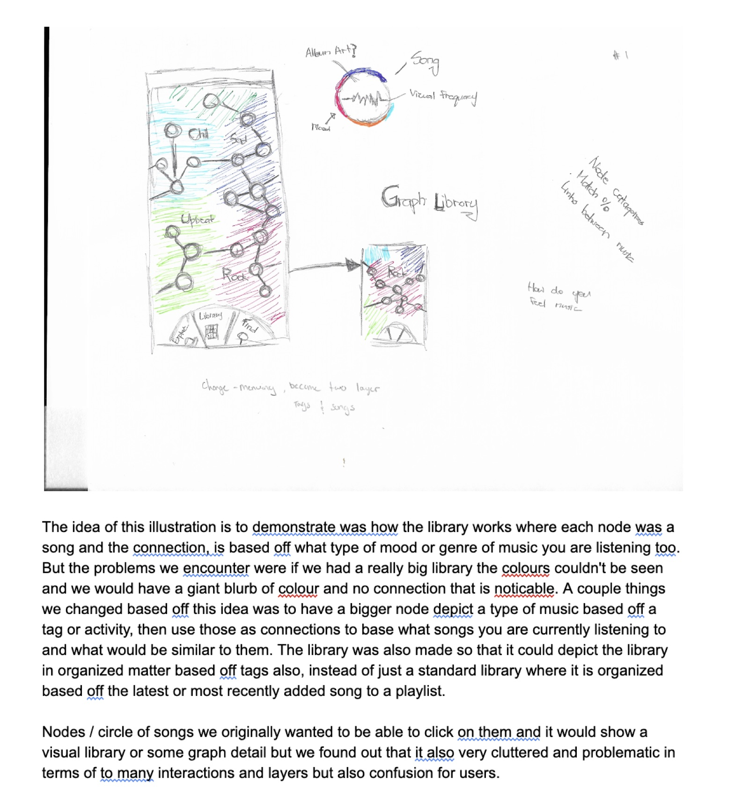
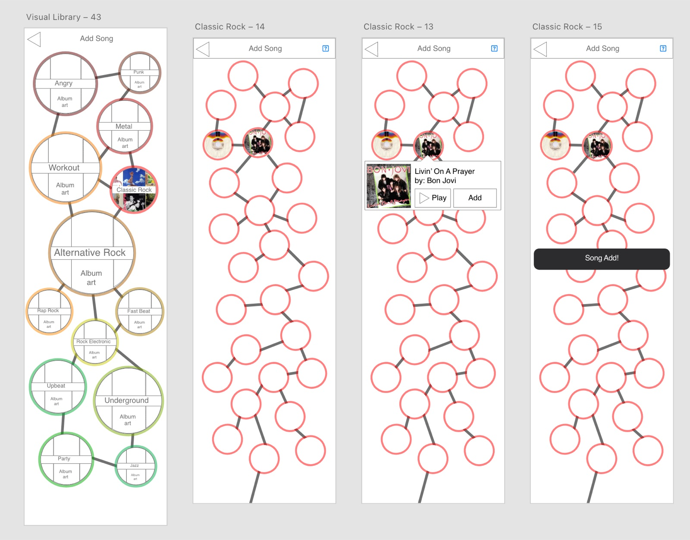
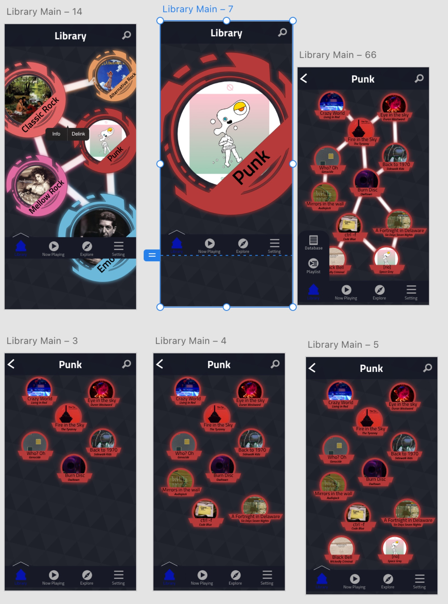
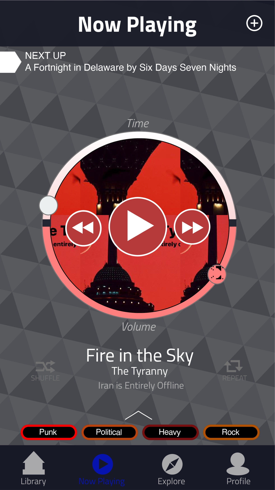
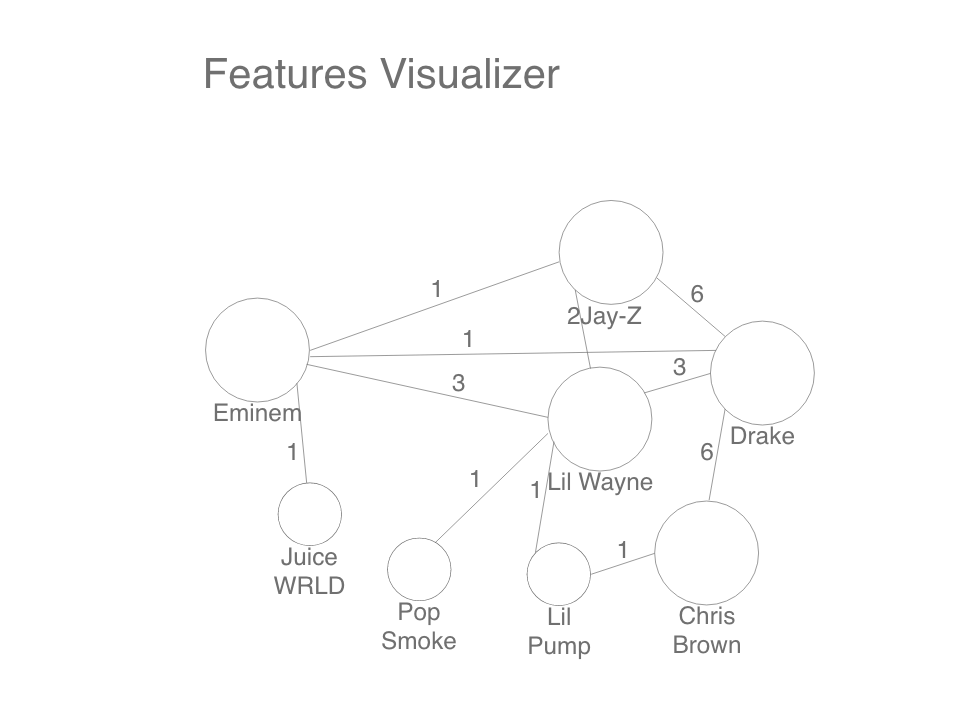
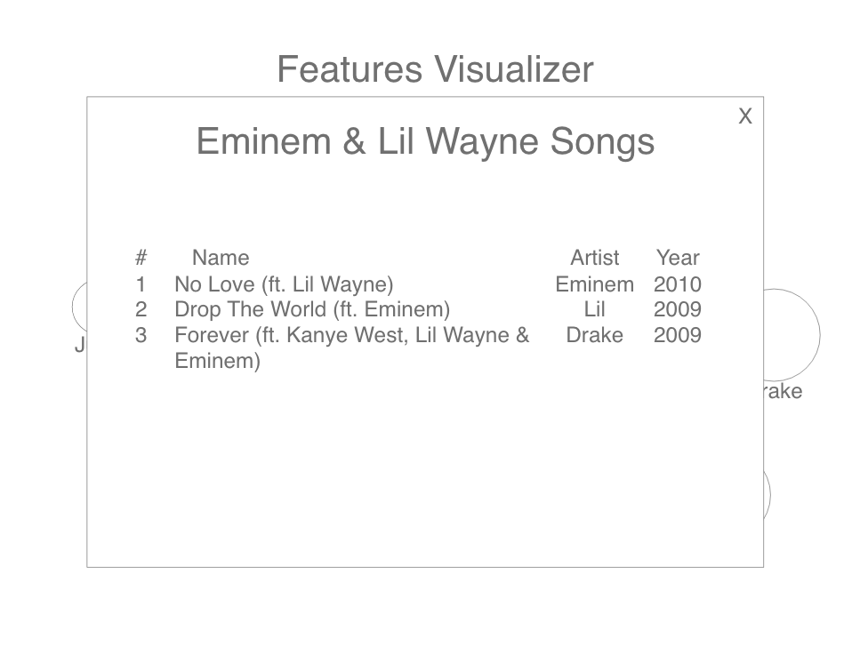
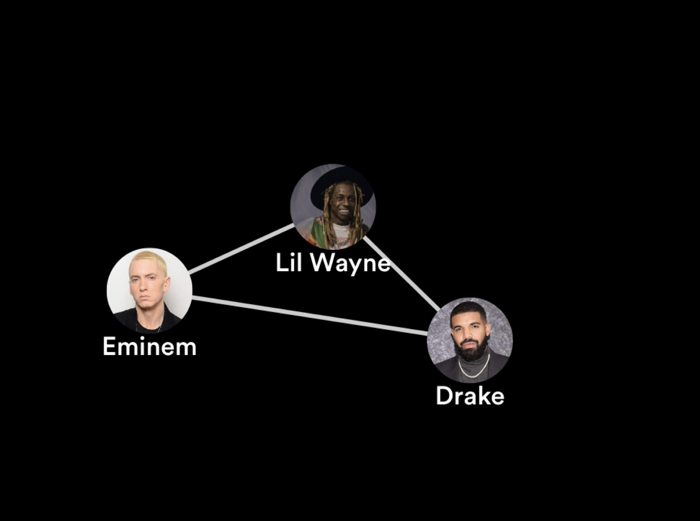
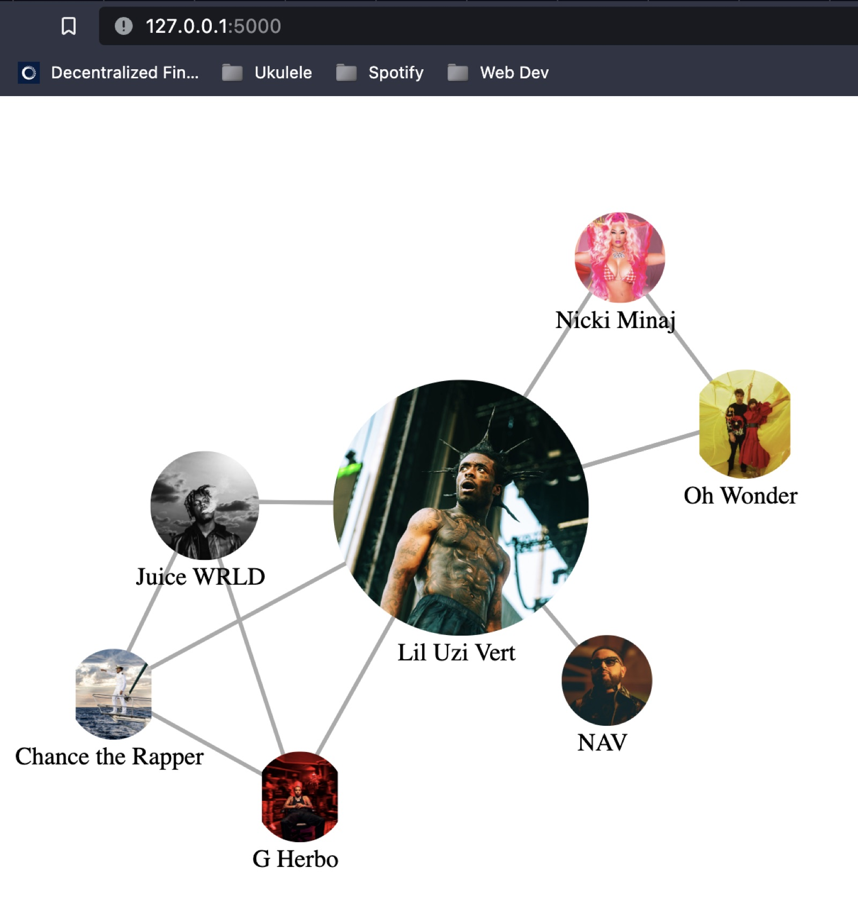
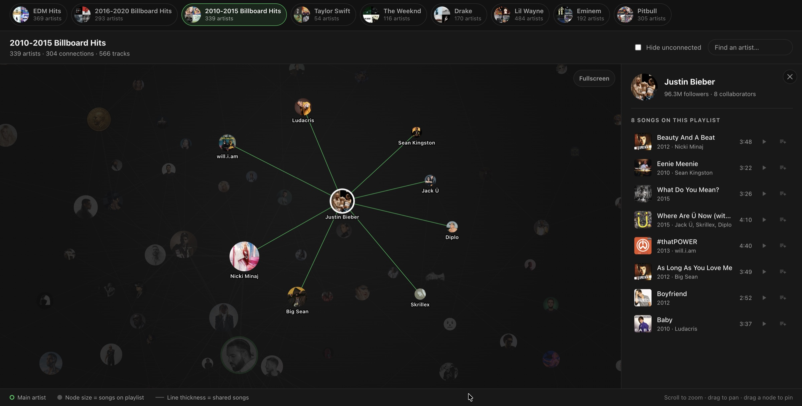

The short version
Popified Networks turns a Spotify playlist into a map of which artists have actually made songs together, and every connection links back to real tracks. I designed and built it alone in Python, Flask, D3.js and the Spotify API.
Underneath the music it's a general structure: take a set of entities, derive their connections from the events they share, and make the resulting shape explorable and provable. Here the entities are artists and the shared events are songs, so two artists credited on the same track become a link, and artists who have recorded together repeatedly become a thick one. The same pattern fits authors and papers, actors and films, companies and contracts, or contributors and repositories. Any domain where the relationships already sit in the records but nobody has assembled them into something you can look at.
Music was a deliberate choice for the first test domain. The data is public, the relationships are dense enough to make a graph worth looking at, and I could check correctness by eye, which won't be true of the domains where this would be most useful.
Spotify caps apps in Development Mode at five users, so I precomputed nine playlist graphs and serve them as static JSON. Together they cover 1,649 unique artists and 3,540 unique connections, explorable without an account.
I shared it with friends for five days as a smoke test: 59 page views, 96 artist clicks, 21 song clicks, 6 Spotify opens. Roughly a fifth of artist clicks led to a song click. That's the drop off I'd look at next, though a sample this small and friendly can't tell me why.
Where It Started
The idea behind this goes back to 2019, and it's one I kept coming back to as my skills caught up with it. The 2026 rebuild is the point where I could finally do the original concept justice against a live API.
Fall 2019: MusicSurf. MusicSurf was a four person team project in CPSC 481, my Human Computer Interaction course at the University of Calgary. We ran a full UX process together, including user interviews, paper prototypes, and a high fidelity Adobe XD prototype. I led the interaction design for the node graph menu, and the sketches below are mine. It organized songs by mood, genre and emotion into a network structure instead of playlists, and that was really where the nodes and links model came from. MusicSurf was about mapping music by how it felt.




Spring 2020: Exploring the Spotify API. This wasn't a proper project at all, more like casual tinkering on evenings and weekends. I wanted to know whether collaboration credits could actually be pulled from the API, and it turned out they could. The earliest sketches already had shared song counts on the edges and the actual track list behind each connection, and those two ideas are still what the product is built around today.


2023: First working web build. I assembled the pieces into a Flask app running locally. Artist photographs replaced the plain circles as nodes, and it was around that point that the product started to feel like something real. Then I set it aside again.


2026: The current product. This was a focused rebuild where I put together a structured Flask app, a D3.js front end, nine playlist graphs built offline in advance and served as static JSON, and a lightweight analytics setup so I could see whether anyone actually used it. It's the 2019 concept, executed properly against a live API.
The Problem
A playlist is just a vertical list, and a list can only ever communicate order. It can't show relationship. Two artists can sit forty rows apart, have made six songs together, and nothing in the interface will ever surface that.
Every connection in this graph represents actual work. A session, a deadline, a budget, somebody's decision to put two names on one recording. An artist who has accumulated fifteen collaborators over a decade did not do that passively. Rendered as a vertical playlist, all of that accumulated effort is invisible. Rendered as a graph, it looks like what it is.
That's the argument for this project. The record of who worked with whom already exists as credits on individual tracks, and that data is accurate and complete. It's just structurally invisible, so those questions get answered by memory or a manual discography trawl. Putting the credits into a shape you can actually look at is a way of seeing an industry's collaborative labour that didn't previously exist.
What got me started was one conversation. A friend who releases music described tracing his own collaborative history by scrolling his discography release by release, one at a time, because there was no other way to do it. That stuck with me and it's why I built this. It's also one conversation, so I'd call it motivation rather than evidence.
I can imagine this being useful to people who work with catalogues professionally, labels, managers, a music journalist tracing an artist's lineage. But that stayed a hypothesis. I don't have access to that circle and I never tested it with them.
The Constraints I Had to Work Around
Getting from "the collaboration data technically exists" to "someone can open a link and explore it" meant working around some pretty hard platform limits, and each one ended up shaping a design decision.
- Spotify apps are capped at 5 users in Development Mode. Lifting that cap isn't realistically available to an individual developer, which I go into under "Why There's No Login Wall" below. My response was to build all nine playlist graphs offline in advance so the product delivers real value without an account.
- Spotify has no "who has this artist worked with" endpoint. The core question the product answers can't be asked directly. My response was to derive it instead: walk every track in a playlist, extract all the credited artists, and build edges from shared track credits.
- Genre data was coarsened until a diverse playlist collapsed into around three buckets, which made a shipped feature completely useless from an information standpoint. I removed it, and I'll explain that more below.
- Rate limits and batch size caps on metadata lookups caused naive fetching to fail on larger catalogues. My response was to batch requests, add retry logic with backoff, and cache the results.
The reframe that made everything possible was treating any playlist as the unit of analysis, instead of asking Spotify for a collaboration graph it can't produce. A full discography, a label roster, a whole scene, any of those can be expressed as a playlist and therefore graphed. The limitation became the interface.
One precision worth stating plainly, because a music literate reader will ask about it immediately. Every edge in this graph is a performing credit: two artists appearing as credited artists on the same track, either as the primary artist or as a feature. Production and songwriting credits are not in the graph at all. Those are real collaborations, often the ones that shaped a record most, but Spotify's API doesn't expose them, so they can't be derived from this source. A producer with credits across a whole era of records is invisible here unless they also performed on something. That's a genuine limit on what this graph can claim to show, not a detail.
How It Compares to What Else Exists
The music discovery landscape pretty much splits into two fundamentally different things. Credit data is a fact: these two names appear on this recording. Similarity data is an inference: these two names sound or feel adjacent. The first can't be derived from the second, and that distinction determines whether a product could ever have answered the question this one is asking.
MusicBrainz and Discogs do hold collaboration data, and MusicBrainz even models it as a first class relationship type. They also hold the production and songwriting credits Spotify doesn't expose, so what they are able to count as a collaboration is genuinely wider than what I can derive. But both present it as hyperlinked text that has to be navigated one hop at a time, opening pages and following links. The data exists. What nobody has done is join that credit data to a visual structure where the shape itself is the information.
Spotify was the right choice for three practical reasons. First, it returns artist photographs in the same API response as the credit data, which is the only reason using artist photos as nodes works at all. Second, it offers playback, so discovery can end in listening rather than a dead end. Third, batch endpoints can resolve hundreds of artists in just a handful of requests. One of those reasons has since expired. Until February 2026, the Spotify API would return the contents of any public playlist by ID, which is exactly what made the "any playlist becomes the dataset" design possible. Spotify's changelog states that playlists owned by other accounts now return metadata only, not contents. In practice, when I hit the endpoint my app relied on, it came back 403. Either way, the app can't graph someone else's playlist any more. Logged in, you can still graph any playlist sitting in your own library, including a copy of someone else's, and that path works fine. But login is capped at five users, so almost nobody ever reaches it, which is why the nine precomputed graphs are what essentially every visitor actually experiences. The original decision was correct when I made it. The platform changed underneath it.
Why There's No Login Wall
Spotify caps apps in Development Mode at five manually approved users. Lifting that cap requires Extended Quota, which needs a registered business entity and at least 250k monthly active users. Since May 2025 extended access has been reserved for established, scalable services, which in practice rules out an individual developer. A product that required login to start would have been usable by five people on earth. So login couldn't be the front door.
Nine playlists are built offline in advance by a Python script and published as static JSON. A visitor lands on a 369-artist graph with 527 connections, the EDM Hits default, with no account at all, no redirect and no quota. Login is available for the few who qualify, but it's a bonus rather than a requirement.
The nine graphs as published:
| Playlist | Artists | Connections |
|---|---|---|
| Lil Wayne | 484 | 1,001 |
| EDM Hits default | 369 | 527 |
| 2010–2015 Billboard Hits | 339 | 304 |
| Pitbull | 305 | 778 |
| 2016–2020 Billboard Hits | 293 | 310 |
| Eminem | 192 | 386 |
| Drake | 170 | 291 |
| The Weeknd | 116 | 165 |
| Taylor Swift | 54 | 59 |
| Unique across all nine | 1,649 | 3,540 |
Counted from the published graph payloads and cross-checked against the app's own interface. The nine lists sum to 2,322 artist entries and 3,821 connections; removing the artists and pairs that appear on more than one playlist leaves 1,649 unique artists and 3,540 unique connections.
Designing the Graph
The central visual decision was to use the artist's photograph as the node. Faces are much faster to process than names, which is why the graph feels pretty intuitive almost immediately. Node size encodes song count on the playlist, so the more tracks an artist has on a given playlist, the bigger their node appears. Link thickness encodes shared song count, so a thicker line signals a denser collaboration. A green ring marks the main artist on discography playlists, which gives an anchor point before anything is clicked.
I chose a dark palette because the graph's content is artist photography, up to 484 simultaneous images on the largest graph, and a dark canvas lets the photos carry the colour while the interface itself recedes. The design system lives as CSS custom properties, and a build script copies the app's real CSS into the published static demo so both front ends share one source and can't drift apart.

Accessibility, Honestly
I close the MusicSurf case study by naming colour accessibility as that project's main weakness, because an emotional encoding built out of hue only works if everyone can read the hue. Seven years later I shipped a graph where selection state is a green ring and green edges and nothing else. I made a version of the same mistake I had already written down, which is the most useful thing I can say about accessibility here, so I'd rather say it than leave the section out.
Two things are genuinely right, though I'd be overclaiming if I called them deliberate. Node size encodes song count and link thickness encodes shared song count. Both are non-colour channels, so the two most important quantities in the graph survive even if colour doesn't reach the viewer. I built redundant visual encoding without framing it that way at the time.
The rest is a list of things that are wrong, each with the fix I'd apply:
- Selection is carried by hue alone. Clicking an artist draws a green ring and turns their edges green. There is no second channel. The fix is stroke weight on the selected node and its links, or dimming everything unconnected so that selection reads as contrast rather than colour. Either one survives a viewer who can't separate that green from the artwork behind it.
- A force directed SVG graph is effectively invisible to a screen reader. I never built a text alternative for it, so the entire product is unusable without sight. The fix is a text alternative generated from the same JSON the graph already loads: a table of artist, collaborators, and the tracks they share. That's cheap, because the data is already sitting there in the right shape, which makes not having built it harder to defend rather than easier.
- There is no keyboard navigation between nodes. The graph is mouse and touch only. Arrow key traversal between connected artists would suit the structure, and shipping the table view would also solve it by giving keyboard users a complete path through the same data.
- The force simulation animates on load with no prefers-reduced-motion handling. Nodes fly into position every time a graph opens, and I never wrote the media query that would let a system level setting turn that off.
- Mobile tap targets may be too small. Node size varies with song count, so the smallest nodes on a dense graph likely fall below the 44 by 44 pixel minimum. I haven't measured it, so I'm flagging it as probable rather than confirmed.
None of these fixes are implemented. Writing the list is not the same as shipping it, and the distance between identifying this problem in one project and repeating it in the next is the part of this case study I'd most expect to be asked about.
What the Data Showed
This was a smoke test, not a study. I sent the link to friends to confirm the instrumentation was actually recording and to see whether anyone clicked anything without being told to. Over five days it recorded 59 page views, 96 artist clicks, 21 song clicks and 6 Spotify opens.
That works out to 1.6 artist clicks per page view, 22% of artist clicks leading to a song click, and 29% of song clicks leading to playback.
The limits are worth stating plainly. The sample is tiny, the audience was warm and wanted the project to work, these are event counts rather than unique sessions, and I didn't record a mobile versus desktop split. My guess about the drop off is that on mobile the detail panel sits below the graph, so the result of a tap is off screen and people don't realize it's there. That's a guess, not a hypothesis: six playback events can't support one. To actually conclude anything I'd need moderated sessions where I can watch what people do, plus a few hundred unprompted sessions from people who don't know me.
Killing a Feature That Worked
I wanted to add a genre mode: the same graph, but with nodes clustered by genre instead of by a force directed layout. The problem was that Spotify's genre data kept coming back blank at the track level. The workaround was to pull genre from the artist instead, but that introduced a different issue. Artists pivot. Drake has made house music. Grouping a diverse playlist by artist genre collapsed everything into around three broad buckets, which made the visual completely unreadable and the clustering meaningless. Worth saying that this wasn't a platform change I got caught out by. Spotify's genre data has always been shaped this way, so I wasn't waiting on anything: the limitation was permanent, which is what turned this into a decision rather than a delay.
I removed it. Based on my competitive analysis, per track genre data does exist elsewhere, MusicBrainz and Discogs both hold it, and getting it from one of those platforms is the path I'd take if I revisited this. The feature isn't impossible. It just can't be built on top of what Spotify exposes today. Removing something that runs but delivers nothing is a harder call than removing something that's broken, and it's probably the decision in this project I'd most want to talk through.
Where This Goes
The general version of this is where I want to take it. Music was a forgiving first domain precisely because I already knew most of the answers, which is what made it easy to spot when the graph was wrong, and also what makes it a weak test of the idea. Extending this into a general relationship mapping tool, and running it against a domain where the answer isn't already in my head the way music was, is the work I want to do next.
Two things I'd change if I started over. I'd run five moderated usability sessions before touching any code, and I'd make it clearer from the first interaction that the connections are clickable, because the most interesting content in the product lives there and nothing in the current UI makes that obvious.
One more thing worth saying plainly. All the behavioural data I have came from 59 page views of people I know. I never spoke to a label, a manager or a music journalist, because I don't have access to that circle yet. Finding out whether people who work with catalogues professionally see what I see in this is the first thing I'd do next.
References
Sources for the Spotify platform claims made above. All links verified 25 September 2026.
- Development Mode is capped at 5 users. Spotify for Developers, "Quota modes": "Up to 5 authenticated Spotify users can use an app that is in development mode." developer.spotify.com/documentation/web-api/concepts/quota-modes
- Extended Quota requires a registered business entity and at least 250k MAU. Spotify for Developers, "Quota modes", which lists "Established Business Entity (legally registered business or organisation)" and "Maintaining a minimum of active users (at least 250k MAUs)" among its requirements. developer.spotify.com/documentation/web-api/concepts/quota-modes
- Extended access narrowed in May 2025. Spotify for Developers blog, "Updating the Criteria for Web API Extended Access", posted 15 April 2025: "Starting May 15, 2025, extended Web API access will be reserved for apps with established, scalable, and impactful use cases." The post doesn't mention individual developers explicitly. That an individual can't realistically qualify is my own reading of the eligibility criteria on the quota modes page above, which require an established business entity. developer.spotify.com/blog/2025-04-15-updating-the-criteria-for-web-api-extended-access
- Playlists owned by other accounts stopped returning their contents in February 2026. Spotify for Developers, "Web API Changelog — February 2026": the API "will only return an items object for the user's playlist, other playlists will only provide metadata (not the contents of the playlist) in the response." The changelog documents the policy; the 403 described above is my own observation against the endpoint this app relied on. developer.spotify.com/documentation/web-api/references/changes/february-2026
The nine source playlists, all public on Spotify. Artist and connection counts for each are in the table above.
- Lil Wayne — open.spotify.com/playlist/0v9px6Cs3zoFa8tFXJBE5z
- EDM Hits — open.spotify.com/playlist/7MKnQHlRCz4PuvPswuTrRG
- 2010–2015 Billboard Hits — open.spotify.com/playlist/4GoxCryYMMDApadgKn0Y2k
- Pitbull — open.spotify.com/playlist/189ho85sqkpAxJqCRt0tHx
- 2016–2020 Billboard Hits — open.spotify.com/playlist/3h66uGHxm1TlW2BRo4NfDC
- Eminem — open.spotify.com/playlist/6nhhC3GZ0OkZnejAaAupDE
- Drake — open.spotify.com/playlist/0YojRN4lZwHnCtukJsX33H
- The Weeknd — open.spotify.com/playlist/46LUnqZwMf4BpDDEc1dMcu
- Taylor Swift — open.spotify.com/playlist/0eV9RgyyvSFjhCbhWCU5G6